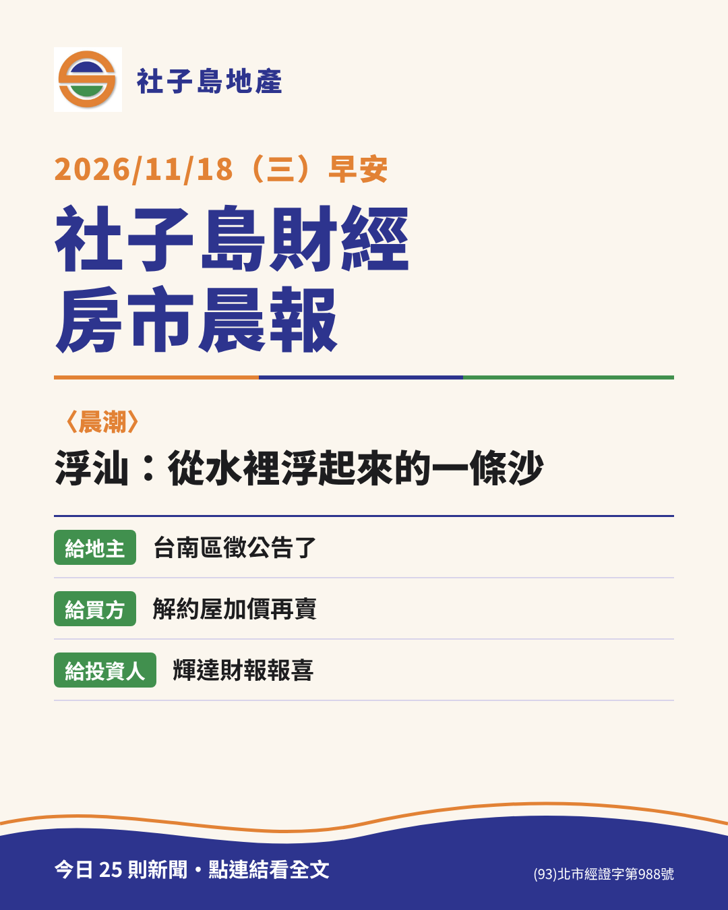

2026/11/18 (三) 早安
社子島財經房市晨報｜浮汕：從水裡浮起來的一條沙
今日 25 則財經與房市新聞，依主題分成 9 類，今天試新排法：主商圈 → 大台北 → 其他縣市（離台北由近到遠）→ 全國主題。點標題就能開啟原文。
〈潮汐表〉今天的三道潮水
- 給地主台南科技產業專區區段徵收17日起公告30天，抵價地比例45.15%；別人的公告，正好拿來當自家的功課。
- 給買方前三季六都預售屋解約再賣，逾35%建商加價出售；簽約前把解約與違約條款一條一條看清楚。
- 給投資人台股兩天跌3,583點、險守4萬點；輝達財報優於預期，盤後一度漲約2%。
〈晨潮〉地名小學堂
浮汕：從水裡浮起來的一條沙
昨天在基隆河邊，阿公問我們：「人攏叫阮遮『浮汕』，這兩字到底是啥意思？是按怎號這个名？」這一題，我們翻了士林社區大學整理的社子島地方文史〈我們的家－社子島〉，也問了幾位老鄰居。
先說「浮」。社子島本來就是淡水河和基隆河一起沖出來的沙洲。文史整理提到，社子一帶的老地名大多跟地形有關：溪洲底、浮洲仔、溪沙尾、浮汕、沙埔，大致照沙洲浮出水面的先後命名。換句話說，這幾個名字像一本用地名寫成的「長大日記」，記下這塊地怎麼一片一片從河裡長出來。
再說「汕」。同一份整理形容，浮汕在延平北路九段一帶，「很像水中再浮出一條線似的沙洲」，也就是兩條河交會、地圖上像鳥嘴的那個尖端附近。聽老鄰居說，閩南話把水裡長長一條、退潮才露出來的沙洲叫做「汕」。所以「浮汕」白話講，就是「從水裡浮起來的一條沙」。
還有一段小插曲：文史資料記載，清代時浮汕一帶劃歸對岸的和尚洲，也就是今天的蘆洲；只有溪洲底屬士林的八芝蘭。一條河的兩岸，搭船來往比走陸路還近，行政上算在對岸，一點也不奇怪。資料也提到，浮汕的人家以李姓為大宗。
社子的老地名，照沙洲長出來的順序
- ① 溪洲底、浮洲仔、溪沙尾、浮汕、沙埔：多與沙洲形成有關
- ② 浮汕：延平北路九段一帶，像水中再浮出的一條線
- ③ 清代浮汕屬和尚洲（今蘆洲），溪洲底屬士林八芝蘭
我們團隊每天上班的延平北路九段，就在浮汕這一帶；報上〈浮汕老人〉專欄，也和這塊地同名。下次走到島頭，看看兩條河怎麼把沙一點一點推上岸，就會懂老祖先取名字有多實在。
地是河一點一點堆出來的，未來的規劃，也是一步一步走出來的。往下滑，今天的新聞試著用新排法：主商圈和大台北在最前面，其他縣市照離台北的遠近往後排，好不好讀，歡迎告訴我們；最後在〈廟口泡茶區〉，我們等您來電。
——社子島地產團隊
主商圈：社子島・北士科・關渡洲美平原1 則
北市第2季預售資料，北投區均價季減6.60%、居北市之冠，市場有人把它和黃仁勳風波連在一起；北市府先前表示北士科總部依計畫推進。社子島計畫仍在內政部審議，關渡洲美平原本週無新進度
大台北：台北市・新北市・基隆6 則
北市12區房價指數全面回升；新北每100人買房45人選3房；淡水紅樹林一戶豪宅持有14年賠售2,952萬；三重都更施工釀鄰房倒塌案換建商重啟；基隆捷運主體17日開工，目標2033年完工
其他縣市：苗栗・台中・台南・高雄（離台北由近到遠）5 則
竹南頭份三個市地重劃區12月1日起禁限建8個月；台南科技產業專區區段徵收17日起公告30天，抵價地比例45.15%；高雄楠梓人口增加，睽違14年新設派出所
全台房市・預售2 則
今年前三季六都預售屋解約後再賣，逾35%建商加價出售、近五成平轉；蛋黃區漲價出售比率高達37%
利率・房貸・資金4 則
央行理監事會約12月17、18日召開，楊金龍說看通膨、各國升息與放款熱度三指標；玉山金預期可能升息半碼；新台幣17日盤中跌破33元，央行尾盤拉抬，收32.85元
稅務與法律實務2 則
受贈房地出售，取得成本不能沿用父母當年買價，要用受贈時的公告現值與評定現值依物價指數調整；買拍定土地遇未登記房屋，二審認定屋主有法定地上權。實際以稅捐機關公告與法院判決為準
房仲與從業人員1 則
房仲全聯會新任理事長吳本源呼籲同業跨足老屋修繕、都更與租賃，多元轉型度寒冬
交通建設與生活1 則
今天東北季風增強，北部午後轉濕涼，台北入夜降雨機率高；週五、週六最冷，局部低溫約12度，出門帶件外套
今日財經大事3 則
台股17日再跌948點、收40,092點，兩天合計跌3,583點；輝達財報優於預期、第4季展望上修，盤後一度漲約2%
〈阿公講古〉
週三早上，阿公走到社子島濕地邊的步道。東北季風剛轉強，蘆葦被吹得一片斜，退潮的泥灘上，小螃蟹一隻一隻鑽進洞裡。
「浮起來的一條沙，」阿公把這句話念了兩遍，笑出聲來：「著啦！阮阿公彼陣講，大水一來，這搭攏總浸佇水底；水一退，沙就浮起來。號名的人，早就看甲清清楚楚。」
「彼陣對面蘆洲的親情，坐船過來食拜拜，比騎鐵馬去士林較緊。」
一陣風吹過，一群鳥從河面飛起來，往對岸關渡的方向去。阿公瞇著眼睛看了很久：「逐年天若冷，就有這款鳥仔飛來。聽講對面關渡有一个專門看鳥的所在，到底是佇佗位？啥物時陣去，看會著上濟？」
阿公的問題，我們明天回答。
〈廟口泡茶區〉
阿公從濕地走回廟口，風有點涼，茶要喝熱的。地名記得的是過去，手上的地，要顧的是以後。
有人來談合建，先別急著點頭：分回比例、找補、工期、履約保證，一條一條寫進契約。這一段，我們陪您一起看。
也想問問您：您家那一帶，老一輩怎麼稱呼？溪洲底、浮汕，還是別的名字？打個電話告訴我們，說不定哪天就寫進晨報。
不急著成交。我們是守在堤邊的人，守著每一塊土地的權益，直到把它交到願意耕耘它的人手上。
📞 歡迎先來電 0922-252-969先通個電話聊聊，再約時間來廟口喝茶。
 掃描 QR code，加 LINE 好友LINE ID：@shezidao💬 加 LINE
掃描 QR code，加 LINE 好友LINE ID：@shezidao💬 加 LINE
社子島地產團隊｜service@shezidao.com.tw
台北市士林區延平北路九段288號
週一至週六 9:30–18:00（週四 9:30–13:30），週日公休📞 來電 0922-252-969
本站由社子島地產開發有限公司經營，為民間不動產資訊網站，非臺北市政府官方網站；政府公告請以臺北市政府與地政局網站為準。
本期新聞由社子島地產團隊自經濟日報、聯合新聞網、自由時報地產天下、工商時報、ETtoday房產雲、中時新聞網、三立新聞網、住展雜誌、中央社、NOWnews今日新聞 等來源收集，標題照原文，點擊即可開啟原始報導；今日新聞依「主商圈 → 大台北 → 其他縣市（離台北由近到遠）→ 全國主題」試排。〈晨潮〉地名資料參考士林社區大學網站〈我們的家－社子島〉社子島地方文史整理；「汕」的說法來自老鄰居口述，未見官方辭書記載。〈晨潮〉〈阿公講古〉為本團隊之參考意見，不構成投資建議，亦不代表支持任何候選人。〈阿公講古〉的阿公，是我們依島上長輩的身影寫成的人物。